Redesenho do fluxo de ativação
Do cadastro ao primeiro tratamento de publicação: um onboarding guiado para destravar o principal momento de valor do Astrea durante o trial.
dos usuários que iniciam o trial chegam a tratar a primeira publicação hoje.
passos no fluxo: jornada encurtada e reorganizada em torno do valor.
· Growth
Resumo executivo
Hoje, menos de um terço dos usuários que iniciam o período gratuito chega a tratar sua primeira publicação — o principal wow effect do Astrea, quando uma informação jurídica vira uma ação concreta dentro do sistema.
A auditoria do fluxo atual apontou o gargalo central: o onboarding orienta o usuário apenas até a etapa anterior ao tratamento e então o deixa sozinho diante de uma tela densa — sem guia, sem possibilidade de voltar e sem deixar evidente o valor da ação.
A oportunidade escolhida foi reorganizar a jornada em um fluxo guiado e gamificado de 7 passos (contra 10 atuais), que antecipa a percepção de valor logo após o cadastro, conduz o usuário passo a passo até salvar o primeiro tratamento e usa progresso e recompensa para sustentar a motivação. Resultado esperado: mover a métrica de ativação — a taxa de usuários em trial que realizam o primeiro tratamento.
Contexto e objetivo
O primeiro tratamento é o momento que prova o valor
O Astrea é o software de gestão jurídica da Aurum, voltado a pequenos e médios escritórios de advocacia, com foco em produtividade e tranquilidade na rotina. Dentro da jornada do usuário, o primeiro tratamento de uma publicação é o momento mais crítico de geração de valor percebido durante o trial: é quando o usuário experimenta, na prática, a proposta do Astrea de transformar uma informação jurídica em uma ação estruturada. A baixa taxa de conclusão dessa etapa revela uma oportunidade clara de melhoria na descoberta de valor, na redução de atritos e na clareza dos próximos passos.
Centraliza informações dos tribunais em um só lugar.
Cada publicação vira tarefa, cada prazo entra na agenda.
Acompanha honorários e o financeiro do escritório.
Como investiguei o problema
Percorri a jornada como uma pessoa advogada real
Criei uma conta no período de teste e percorri toda a jornada, do cadastro ao módulo de publicações, registrando impressões, gravando a navegação e capturando cada etapa. Em um processo completo, esta fase incluiria a construção de personas, pesquisa qualitativa e quantitativa e testes de usabilidade com usuários qualificados.
Carecem de validação por pesquisa e testes; podem alimentar uma matriz de impacto × esforço e um mapa de empatia para alinhar o time.
Novos usuários não completam com facilidade o caminho para tratar uma publicação.
Novos usuários não confiam na ferramenta.
Não entendem o valor gerado: o poder de gestão da ferramenta.
Há dificuldade de escaneamento do texto na tela.
O produto não mostra com clareza o valor criado.
Falta prevenção de erros ao longo do fluxo.
A página de definir objetivo permite que o usuário se desvie da função principal.
Trazer a descrição do tratamento para dentro da jornada aumenta a taxa de sucesso.
Auditoria heurística do fluxo
Baseada nas heurísticas de Nielsen e nas leis de Hick, Tesler e Jakob.
| Heurística | Avaliação | Observação |
|---|---|---|
| Visibilidade do status do sistema | Conforme | Retornos visuais adequados em tempo real. |
| Correspondência com o mundo real | Conforme | Linguagem familiar ao usuário. |
| Controle e liberdade do usuário | Não conforme | Sem retorno a etapas; ativa aversão ao erro e aumenta a desistência. |
| Consistência e padrões | Conforme | Segue convenções de plataforma. |
| Prevenção de erros | Não conforme | Falta mensagem de confirmação em ações sensíveis. |
| Reconhecimento × memorização | Conforme | Opções visíveis, baixa carga de memória. |
| Estética e design minimalista | Parcial | Conforme; menus colapsáveis poderiam melhorar a leitura. |
| Ajuda e documentação | Conforme | Disponível, ainda que fora da jornada inicial. |
| Lei de Hick · excesso de opções | Validar | Análise preliminar OK; requer teste de usabilidade. |
| Lei de Tesler · complexidade | Validar | Avaliar quanto da complexidade o sistema pode absorver. |
| Esforço mínimo / fricção | Validar | Medir cliques e esperas até o aha moment via heatmaps. |
| Gulf of execution | Conforme | O usuário sabe qual é o próximo passo. |
Mapa da jornada atual
Do início do teste ao primeiro tratamento
O mapa reconstrói a jornada percorrida no trial. A orientação ativa do produto se concentra no início (cadastro e configuração) e se dissolve justamente nas etapas finais — acessar uma publicação, abrir tratamentos e preencher os dados — onde o abandono é mais provável.

Fig. 1 — Mapa da jornada atual, reconstruído a partir da navegação no período de teste.
Métricas
O que vamos medir e mover
Taxa de usuários em trial que realizam o primeiro tratamento de publicação.
Tempo até o primeiro tratamento · cliques até concluir · abandono por etapa.
Publicação transformada em ação concreta: tarefa, prazo, evento, audiência ou histórico.
Pessoa advogada ou pequeno/médio escritório em trial, com baixa familiaridade inicial com o Astrea.
Ver o módulo como "mais uma tela complexa" antes de perceber economia de tempo e segurança.
Oportunidades de melhoria
Três frentes de crescimento orientado ao produto
O usuário sabe que a funcionalidade existe, mas não entende por que ela importa para a sua rotina. Tornar o valor evidente já nos primeiros minutos, conectando a publicação à dor real de acompanhar prazos em vários tribunais.
O fluxo funciona para quem já se habituou, mas tem fricção para novos usuários: passos demais, decisões pouco claras e falta de feedback. Reduzir o esforço necessário para concluir o primeiro tratamento.
Após entrar no produto, o usuário não sabe qual é o passo mais valioso a seguir. Guiá-lo de forma ativa até o momento de descoberta de valor, com orientação contextual e senso de progresso.
Priorização
Framework RICE para decidir o que mover primeiro
Para validar de forma assertiva e baseada em dados qual solução afeta mais a métrica de ativação, a priorização usaria o framework RICE, ponderando alcance, impacto, confiança e esforço de cada oportunidade.
Experimento proposto
Um onboarding guiado, com raciocínio de gamificação
Prototipei um novo fluxo que reorganiza a jornada e a transforma em um guia passo a passo, reduzindo a carga de aprendizado e o número de decisões até o aha moment. Assim, a plataforma ganha mais controle sobre o rumo do usuário, podendo incentivá-lo ao longo do caminho e mitigar o abandono.
Conduzir o usuário até concluir a tarefa, reduzindo a chance de desvio do caminho.
Trazer a percepção de valor antes da execução, usando recompensa para motivar.
Simplificar e encurtar o caminho, de 10 para 7 passos essenciais.
Permitir voltar etapas e conhecer a jornada antes de usar tudo, reduzindo erros e dúvidas.
Racional das decisões de design
Antes das telas finais, esbocei o fluxo em baixa fidelidade para validar a sequência de passos. A proposta de valor vem logo após o cadastro: além dos benefícios já citados, ela inicia o storytelling que representa o momento de descoberta de valor. Testes podem indicar se essa tela funciona melhor com vídeo ou imagem.
Substituí o progresso em etapas por uma barra de progresso, para aproveitar melhor o efeito Zeigarnik, e adicionei uma seta de retorno: no teste, recorrer à seta do navegador durante o cadastro não se mostrou intuitivo. O botão de pular, embora possa parecer contraintuitivo, dá ao usuário uma saída de emergência sempre disponível; combinado a um pop-up, reforça a proposta de valor (efeito do gradiente de objetivo) e ativa o FOMO.

Fig. 2 — Esboço de baixa fidelidade usado para validar a sequência de passos do novo fluxo.
Fluxo atual × proposto
De 10 passos dispersos a 7 passos guiados
- Faz o cadastro
- Define o objetivo
- Busca processos
- Confirma as informações
- Convida usuários
- Entra na página de publicações
- Acessa uma publicação
- Clica em tratamentos
- Seleciona o tratamento
- Tratamento feito
- Faz o cadastro
- Percebe valor NOVO
- Busca processos
- Escolhe o processo
- Edita o tratamento
- Revisa os dados
- Salva aha moment
Removidos os passos que não colaboravam para concluir a tarefa, como convidar usuários e definir objetivo, e a entrega de valor foi trazida já para o começo do fluxo.
Comportamento e psicologia considerados
Uma trilha incompleta cria tensão saudável que estimula a conclusão do primeiro tratamento.
Mostrar o quão perto se está da meta acelera a ação à medida que a conclusão se aproxima.
Enquadrar o que se deixa de ganhar, como perder prazos espalhados em vários tribunais, aumenta a motivação.
Reduzir o número de decisões na primeira experiência diminui a paralisia e o abandono.
Usar padrões de interface já familiares evita que o usuário precise reaprender a interagir com o produto. Por isso, a alta fidelidade respeita a identidade visual do Astrea.
Protótipo de alta fidelidade
O novo fluxo, tela a tela
As telas a seguir materializam o fluxo proposto, respeitando a identidade visual do Astrea para que a experiência pareça parte natural do produto. Telas curtas de uma frase só conversam com o usuário, quebrando a jornada em objetivos claros — as quests.
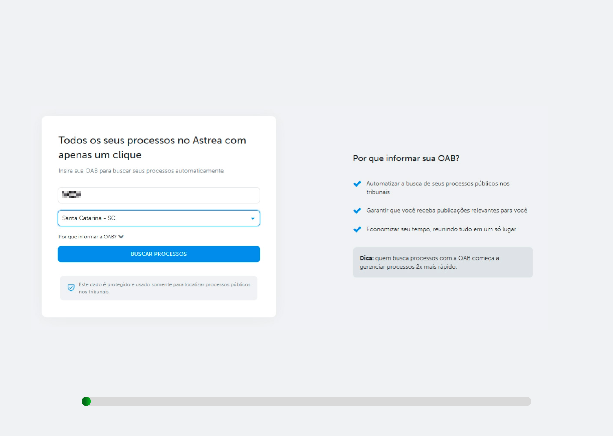
Entrada de baixo atrito: apenas a OAB para buscar processos automaticamente, com prova de valor à direita.
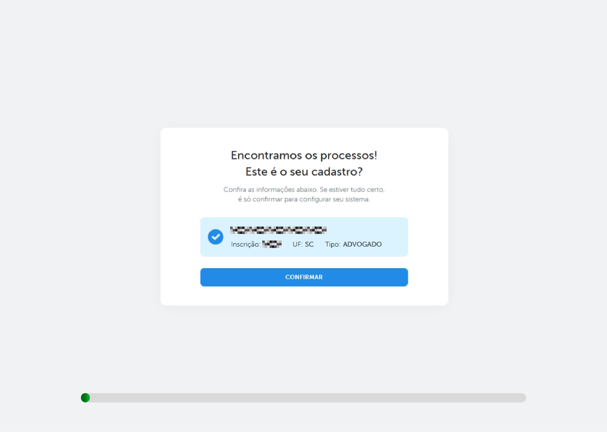
Reconhecimento em vez de digitação: o usuário só confirma os dados encontrados.
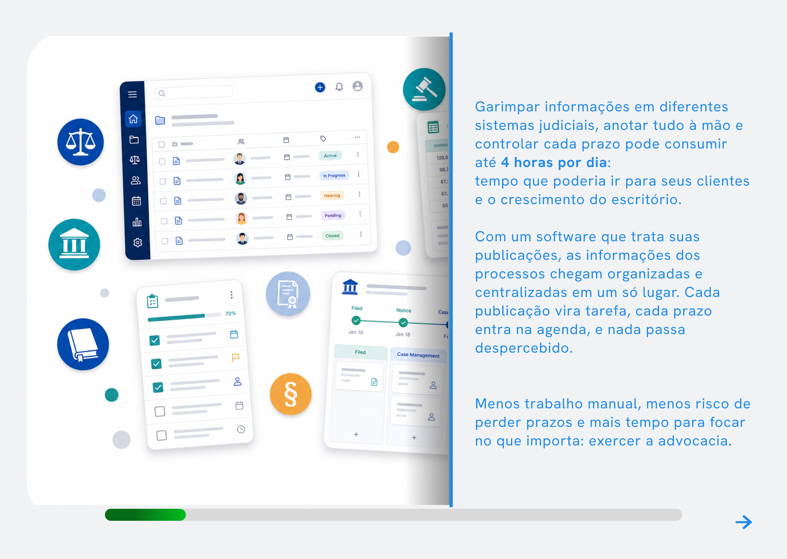
A percepção de valor vem antes da execução, conectando a dor real às até 4 horas de trabalho economizadas por dia.
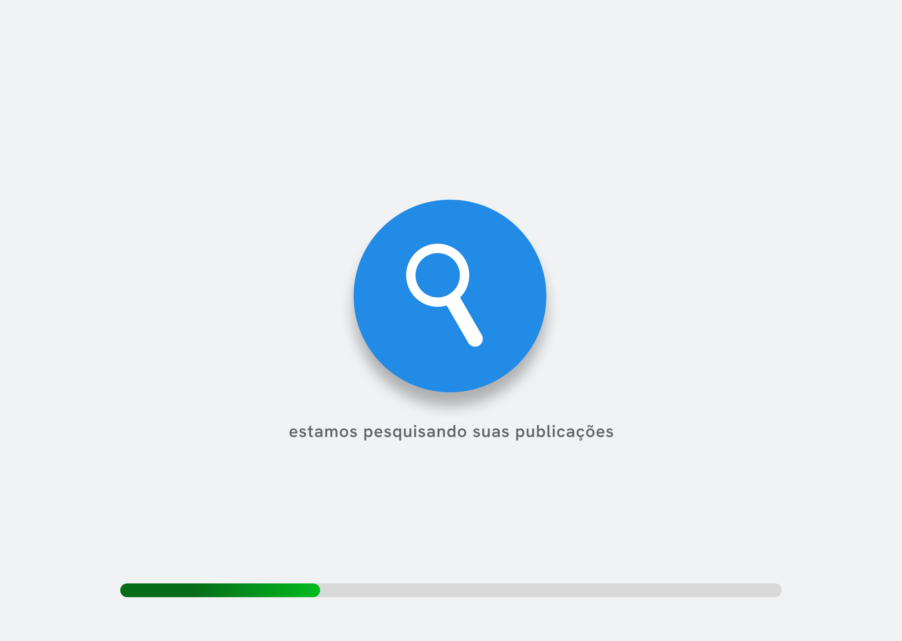
Visibilidade do status do sistema: o usuário sabe que algo está acontecendo a seu favor.
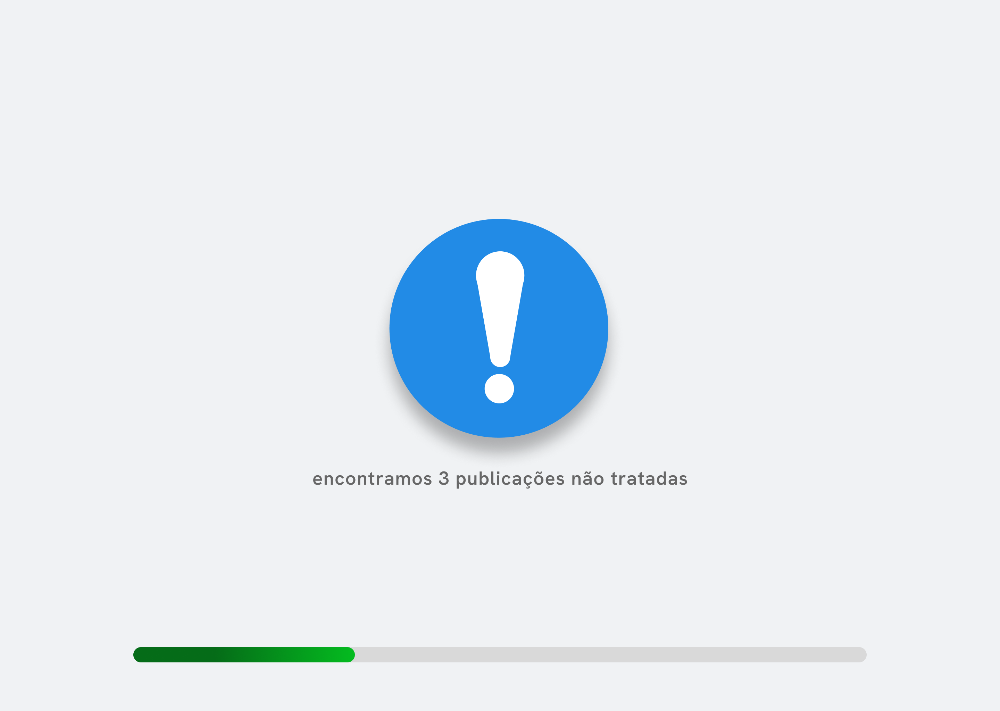
Aversão à perda na prática: "3 publicações não tratadas" cria urgência saudável.
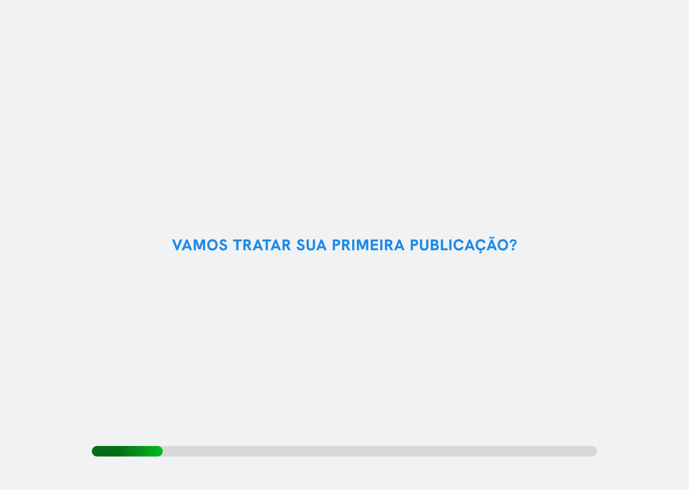
Telas de uma frase conversam com o usuário e quebram a jornada em objetivos claros.
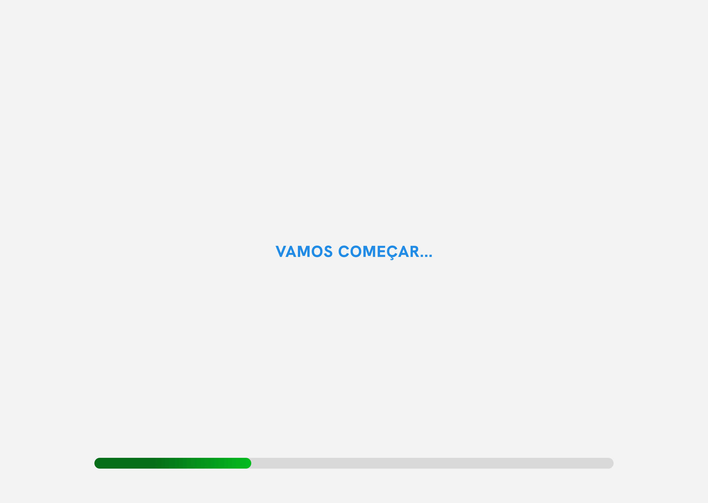
Telas de uma frase conversam com o usuário e quebram a jornada em objetivos claros.
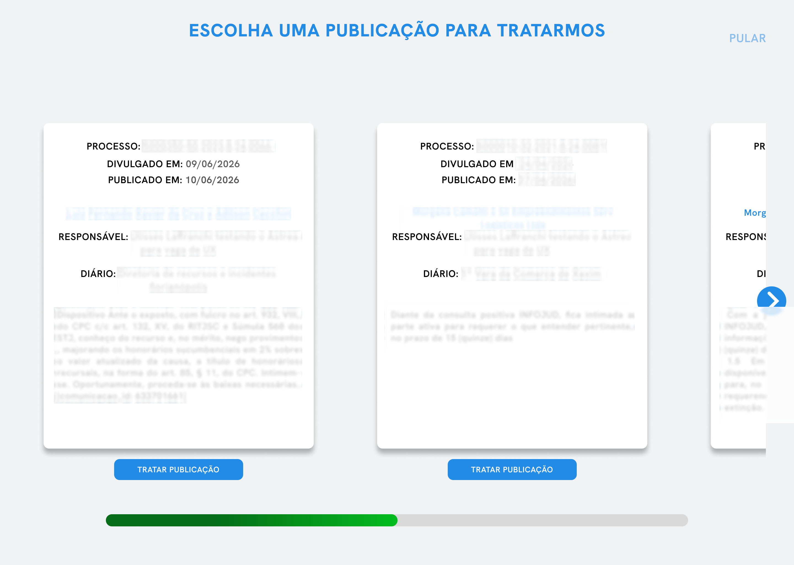
Uma decisão de cada vez: o usuário escolhe a publicação a tratar.
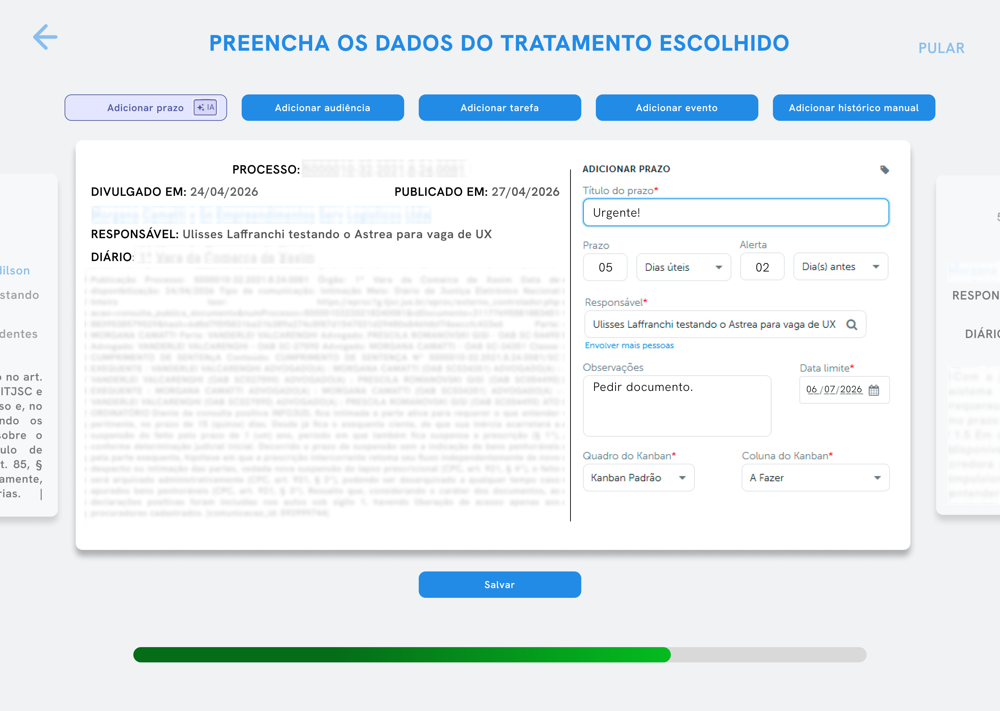
Preenchimento guiado, com o texto da publicação sempre visível ao lado para dar contexto à decisão.
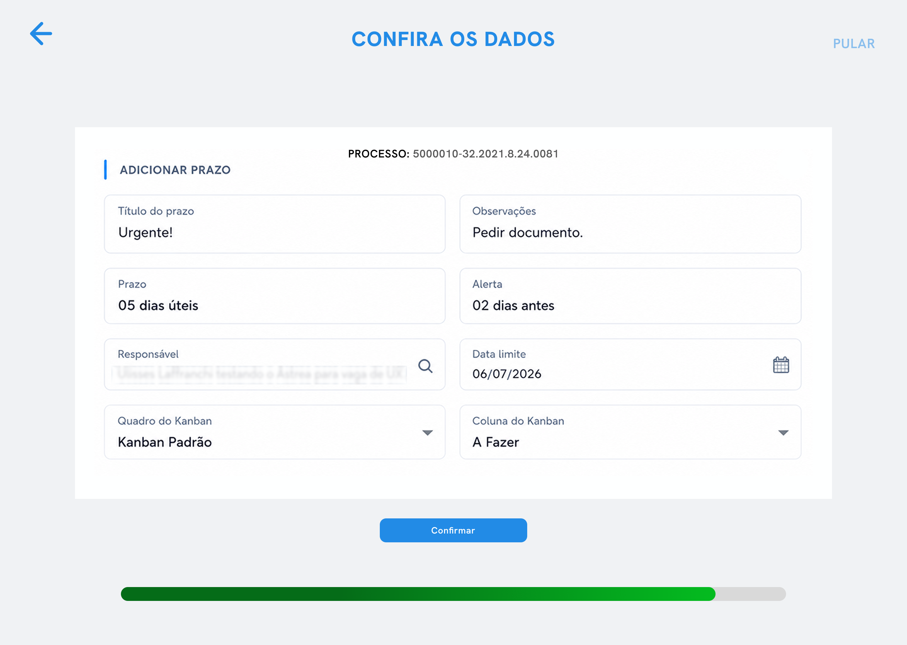
Resumo antes de salvar: reduz erro e dá segurança para concluir a tarefa.
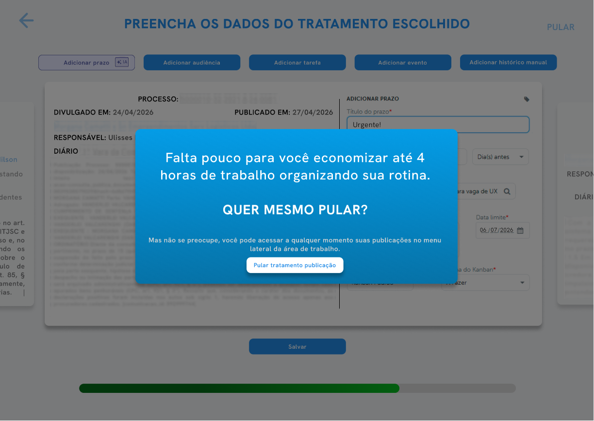
O pop-up de "pular" oferece a saída de emergência e, ao mesmo tempo, reforça a proposta de valor e ativa o FOMO.
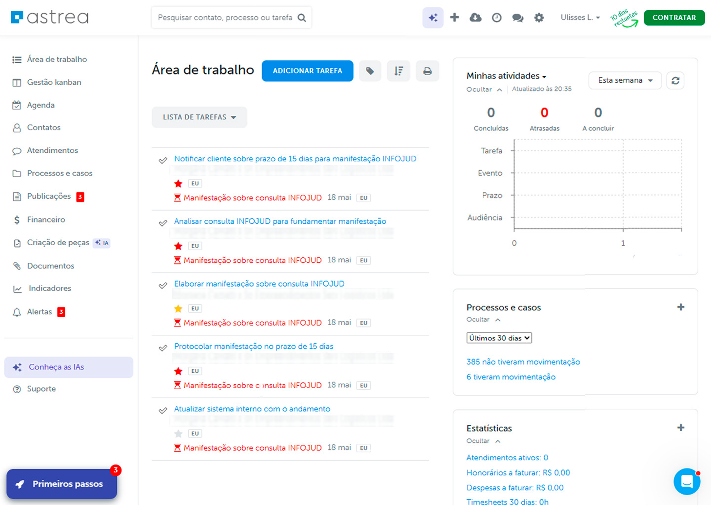
O tratamento salvo vira tarefa e prazo na área de trabalho — nada passa despercebido.
Validar a hipótese e escalar a motivação
Próximos passos
Pontuar cada oportunidade para decidir o que entra primeiro no roadmap.
Usabilidade moderada e heatmaps para validar as hipóteses levantadas.
Comparar vídeo × imagem na tela de entrega de valor.
Recompensas por frequência, tratamentos e cumprimento de agenda, eventualmente com parceiros.